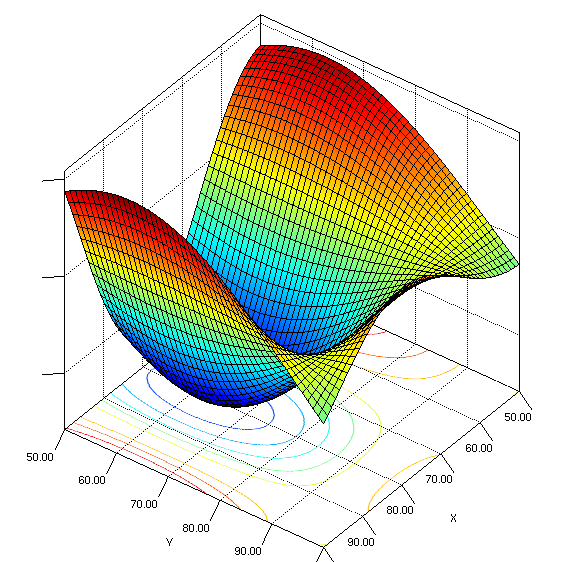

建立自己的数据集¶
对于任何机器学习算法来说，收集具有“代表性”的数据是很有必要的工作。现在我们就来探讨一下什么叫“有代表性”。
什么是好的数据？或者说对于什么样的数据是“有代表性”的？¶
让我们从基本原理上来看这个问题。理论上说，机器学习的前提(准确的说，我们将从这里开始真正的机器学习)是有一个输入变量 X 和一个输出变量 Y ，如果存在一个方法比如 g(X)=Y ,如果 g 也是未知的，我们可以“学习”一个与 g 相似的方法 f 。从本质上说，这与您之前学过的“曲线拟合”没有什么区别。例如，如果你试图预测某人的电影喜好，那么 X 可以是这个人的性别、年龄、国籍等信息，而 Y 可以是他们最喜欢的类型!
让我们来做个实验。假设就用同样的例子-我想预测人们对电影的喜好。某一天我走进教室，收集学生们的信息和他们对电影的喜好。现在我们使用这些数据来构建模型。你认为我能通过这个方法能多么准确地预测我父亲的电影喜好？答案是-很大概率预测地不准确。为啥？直观的说在教室里的同学们可能没有属于我父亲那个年龄段的。我的模型可以告诉我那些18到30岁年龄段的人更加喜欢纪录片而不是超级英雄的电影。但这种趋势会持续到55岁么？或许，他们会渐渐开始喜欢家庭喜剧片，又或许是其他的。简而言之，因为我们的数据没有告诉我们与之相关的任何信息，所以我们没法得出准确结论。因此，如果任务是要预测任何人的电影喜好，那么仅从大学生中收集数据是不具有代表性的。
现在，我们来看看为什么说理论上是合理的。请看下图。
假设纵轴上的变量是 y ，横轴上的两个变量的值构成输入向量 X ，那么我们希望可以找到一个函数f来近似这个函数。如果我收集的数据都是形如 x1 s属于 (80,100) x2 属于 (80,200) 那么学习函数只能学习那些“黄绿色波纹”的部分。我们的函数将永远无法预测真正的函数在“红色”区域的行为。因此，为了能够训练出一个好的函数，我们需要从不同的x1，x2键值对中采样数据。那将是学习这个结构的具有代表性的数据。
因此，我们希望收集的数据能够代表我们想要预测的所有可能的电影。否则（通常会这样），我们需要意识到我们训练的模型和能够自信做出预测的局限性。最简单的方法是只对我们收集的训练数据的领域进行预测。比方说在我们的例子中，我们假设我们的模型只能预测英语电影的类型。那么现在的任务是收集不同电影类型的数据。
那么我们如何获取这些数据？不是用google也没有任何大学发布过这种数据集。我们想要收集这些电影的视觉和文本数据。简单的答案是通过互联网爬取数据来建立我们自己的数据集。为了达到这个项目的目的，我们会使用电影海报作为视觉数据，电影情节作为文本数据。利用这些数据我们将建立一个模型可以预测电影类型！
我们将从两个电影资源中爬取数据-IMDB和TMDB¶
IMDB：http://www.imdb.com/
有些人可能不知道，IMDB是互联网上电影信息的主要数据源。该网站上针对每一部电影有丰富的海报，评论，梗概，评分和许多其他信息。我们将它作为我们主要的数据源。
TMDB，又称为电影数据库，是一个开源版本的IMDB有很多开源的API接口可以被用来收集数据。调用API需要用到密钥，你可以通过免费注册一个账户获得。
警告 -
我们通过免费的API从IMDB获取了一些信息，但还缺失一些关于电影的其他信息。现在我们会通过合法的方式获取免费且合法的信息。但无论怎么说，爬取信息确实处在道德边缘。人们经常从网站上爬取一些并不公开的数据。
import urllib2
import requests
import json
import imdb
import time
import itertools
import wget
import os
import tmdbsimple as tmdb
import numpy as np
import random
import matplotlib
import matplotlib.pyplot as plt
%matplotlib inline
import seaborn as sns
import pickle
以下是为收集数据而要采取的技术步骤的概要¶
- 登录TMDB，然后设置API用来爬取以上电影的海报。
- 设置好并通过TMDB的数据库获取到电影的信息。
- 同理从IMDB获取信息。
- 对比一部电影在IMDB和TMDB上条目的数量。
- 列举一部分电影的信息。
- 思考和衡量可能遇到的挑战，思考我们可以通过手中的API回答哪些有趣的问题。
- 从TMDB收集数据。
让我们一步一步实现。
登录TMDB并设置好准备获取电影原始数据¶
- 第一步 打开[tmdb.org](https://www.themoviedb.org/?language=en)注册一个帐号并登录
- 第二步 点击你个人信息的右上角，在下拉列表中选择“设置”
- 第三步 在设置页面中点击左侧面板中的“API”选项
- 第四步 申请一个开发者密钥。填写相关表单，其中“应用程序名称”和“应用程序链接”不是很重要可以任意填写。
- 第五步 页面会生成一个新的API密钥同时你也会收到相关邮件
现在你已经有个TMDB的API接口的密钥了，你可以通过TMDB进行查询。记住，你只允许每10秒钟请求不超过40次。
一个简单方法应对这个限制只需要每次迭代时调用 time.sleep(1) 即可。同时这对服务器也很友好。
如果你想尝试并最大化吞吐量，可以将每一个TMDB请求包装在嵌入的 try/except 模块中。当首次遇到失败时，第二次请求时调用python的sleep函数延迟一段时间，然后再次请求。像下面这样
try:
search.movie(query=movie) #An API request
except:
try:
time.sleep(10) #sleep for a bit, to give API requests a rest.
search.movie(query=<i>movie_name</i>) #Make second API request
except:
print "Failed second attempt too, check if there's any error in request"
使用从TMDB申请到的API密钥获取电影信息¶
为了简单起见，我已经写好了这些方法。基本上来说，我会使用一个名叫 tmdbsimple 的库来使得使用TMDB更加简单。这个库在一开始就安装了。
当然，如果你不想使用库，不使用 tmdbsimple 也可以很容易地将API输出直接加载到这样的字典中
url = 'https://api.themoviedb.org/3/movie/1581?api_key=' + api_key
data = urllib2.urlopen(url).read()
#加载json数据到字典中
dataDict = json.loads(data)
# 在此设置你想要保存爬取数据的目录!
poster_folder='posters_final/'
if poster_folder.split('/')[0] in os.listdir('./'):
print('Folder already exists')
else:
os.mkdir('./'+poster_folder)
# 在本例中我将使用1999年的科幻电影《黑客帝国》!
api_key = '' #在此填入你的API密钥
# 如何获取API密钥在上文已经说了
tmdb.API_KEY = api_key #将API密钥设置到 tmdb 对象的属性中
search = tmdb.Search() #这个实例是一个 tmdb “查询”对象，你可以用它来查找电影
# 这个方法使用电影名称作为参数
# 返回电影的一些属性信息
def grab_poster_tmdb(movie):
response = search.movie(query=movie)
id=response['results'][0]['id']
movie = tmdb.Movies(id)
posterp=movie.info()['poster_path']
title=movie.info()['original_title']
url='image.tmdb.org/t/p/original'+posterp
title='_'.join(title.split(' '))
strcmd='wget -O '+poster_folder+title+'.jpg '+url
os.system(strcmd)
def get_movie_id_tmdb(movie):
response = search.movie(query=movie)
movie_id=response['results'][0]['id']
return movie_id
def get_movie_info_tmdb(movie):
response = search.movie(query=movie)
id=response['results'][0]['id']
movie = tmdb.Movies(id)
info=movie.info()
return info
def get_movie_genres_tmdb(movie):
response = search.movie(query=movie)
id=response['results'][0]['id']
movie = tmdb.Movies(id)
genres=movie.info()['genres']
return genres
虽然上面的函数可以方便地获取类型、海报和ID，但是可以通过调用函数get_movie_info_tmdb()查看所有可以访问的信息，如下所示
print get_movie_genres_tmdb("The Matrix")
[{u'id': 28, u'name': u'Action'}, {u'id': 878, u'name': u'Science Fiction'}]
info=get_movie_info_tmdb("The Matrix")
print "All the Movie information from TMDB gets stored in a dictionary with the following keys for easy access -"
info.keys()
#所有从TMDB获取的电影信息都存储在下面的字典中
[u'poster_path',
u'production_countries',
u'revenue',
u'overview',
u'video',
u'id',
u'genres',
u'title',
u'tagline',
u'vote_count',
u'homepage',
u'belongs_to_collection',
u'original_language',
u'status',
u'spoken_languages',
u'imdb_id',
u'adult',
u'backdrop_path',
u'production_companies',
u'release_date',
u'popularity',
u'original_title',
u'budget',
u'vote_average',
u'runtime']
#我们试着获取一下电影宣传语
info=get_movie_info_tmdb("The Matrix")
print info['tagline']
Welcome to the Real World.